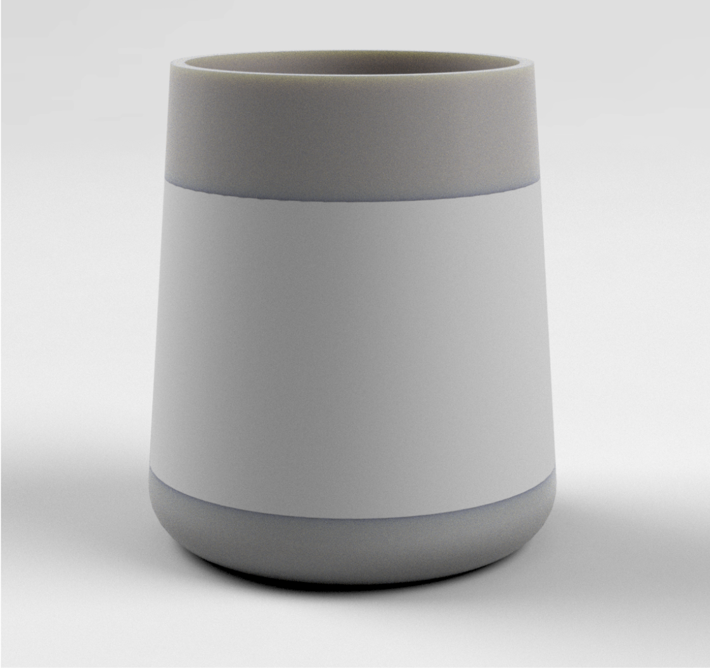
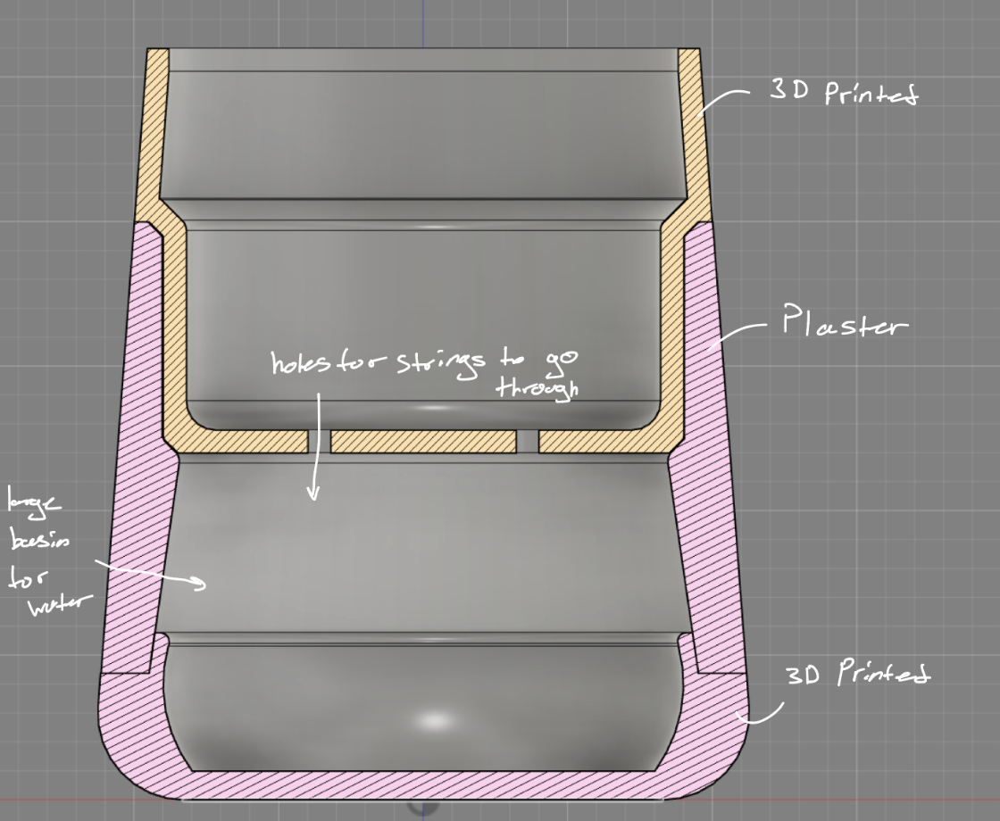
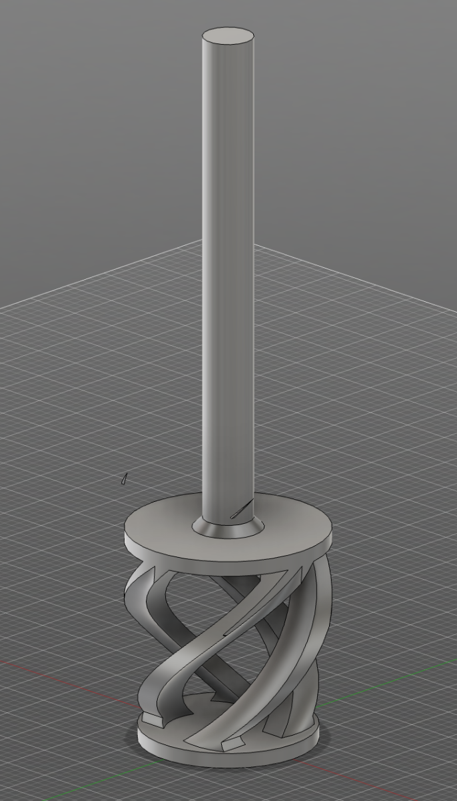
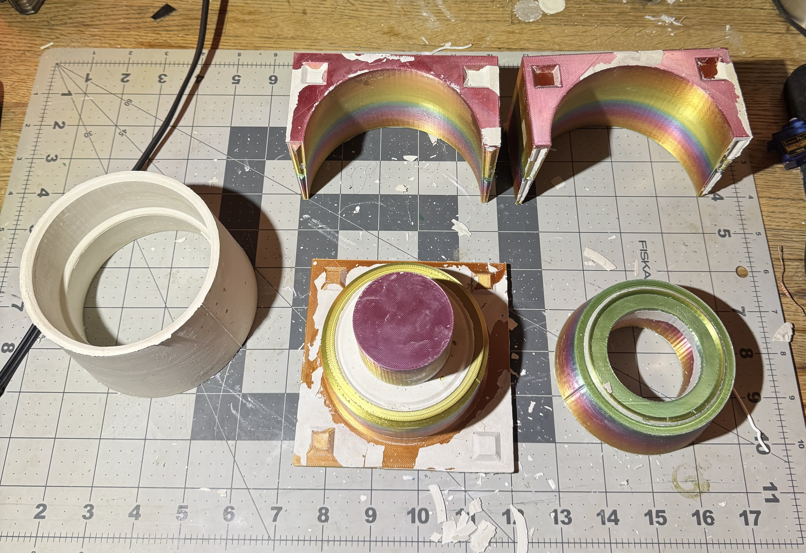
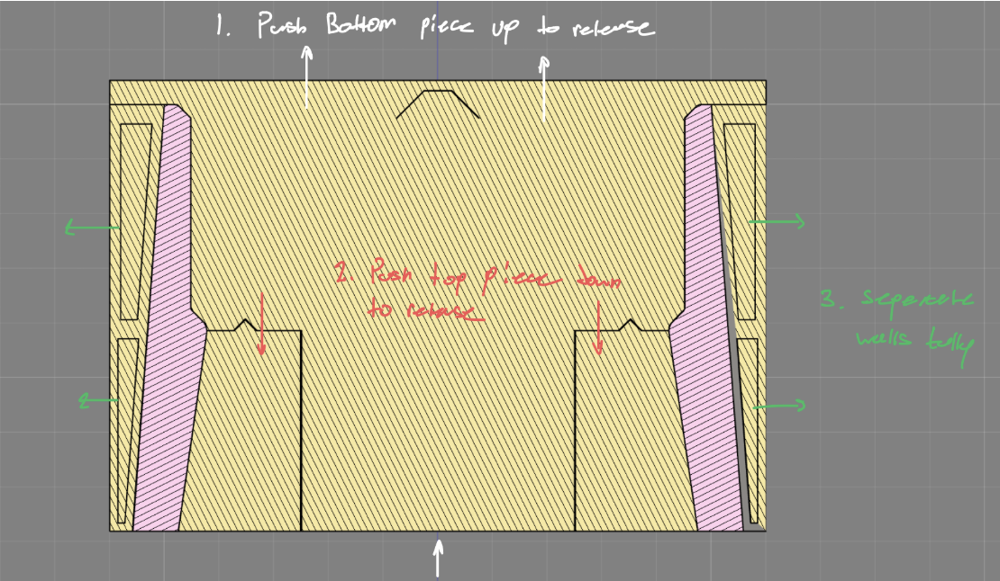
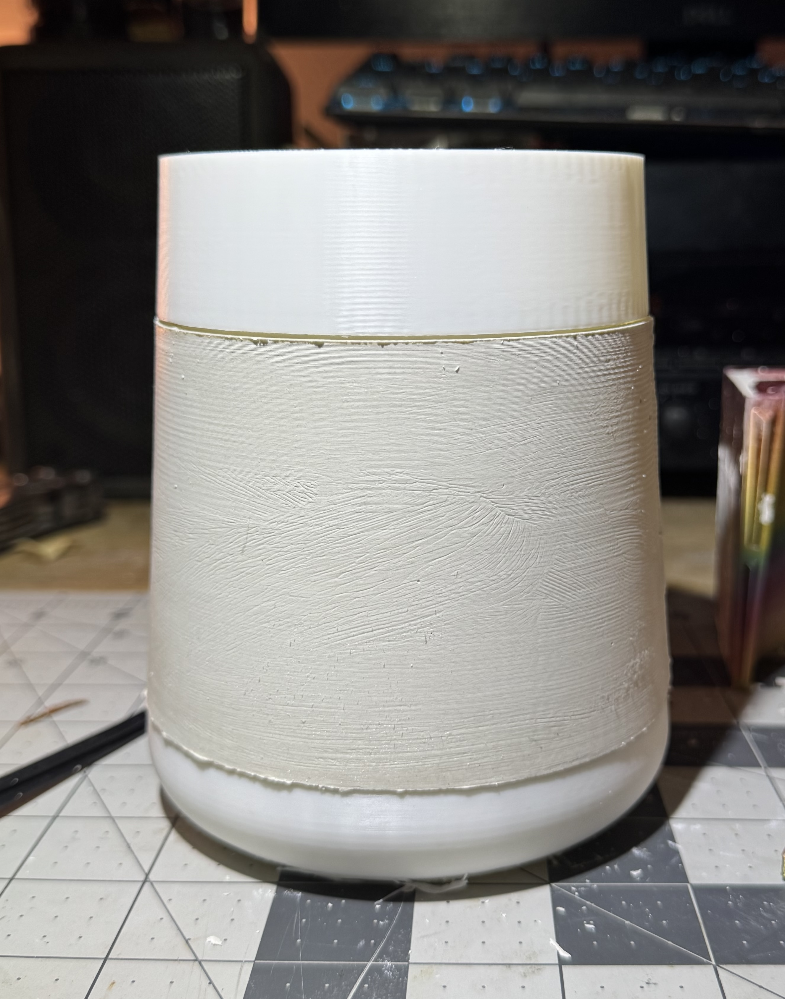

Christmas Gift Self Watering Planter
About a year after creating my first self-watering planter, I wanted to make several simple planters as Christmas gifts for my family. I decided to use the opportunity to design a second version that improved on every aspect of the original while also introducing a greater level of complexity.
Technologies used: Mechanical design, 3D printing, mold making, concrete casting, CAD modeling, material selection.
Design Overview
I first set out to create a design that was simple, functional, and visually appealing enough to display in a living room. I settled on a three-part construction: a 3D-printed base, plaster walls, and a 3D-printed top which holds the plant.


Because the plaster featured a complex shape, designing the mold presented several challenges, especially since I wanted it to be reusable to reduce the cost of producing multiple planters.
Another issue came from my experience making the original planter. Mixing the concrete by hand with a popsicle stick was slow and produced inconsistent results, so I wanted to develop a tool that would make the mixing process faster and more reliable.

Thus I created this mixer that would be able to fit into a drill. Printed in ABS at full infill, this mixer can take quite a beating.
The second challenge involved releasing the plaster from the mold. Because of the planters geometry, the mold needed to separate in multiple directions. The bottom section had to pull downward, the top section had to lift upward, and the side walls had to release outward. I went through several design iterations before creating a mold that was both easy to disassemble and durable enough to reuse.


Once the final design was reached, it was very simple to print the other pieces out to complete the vase, and then repeat.

In total, I made 6 to give to family and friends. In order to add some variety, I changed the filament color and dyed the plaster with different fun colors.
Conclusion
I enjoyed this project thoroughly, it allowed me to fix some of the issues I had with my last planter, while allowing me to improve my skills with design and problem solving.
If I was to further improve this project, I would want to make the planter itself larger to fit larger plants.
If you have any questions please feel free to reach out!